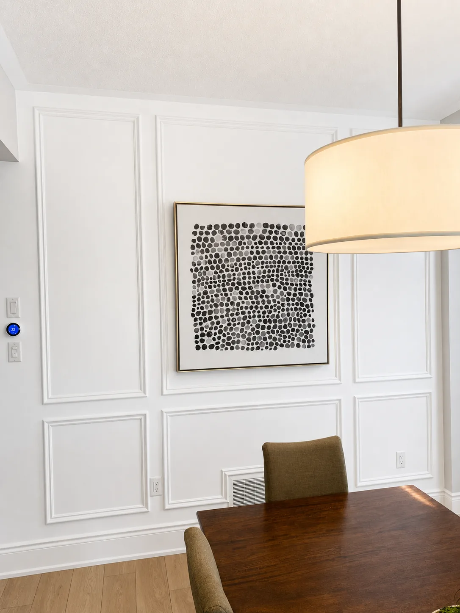
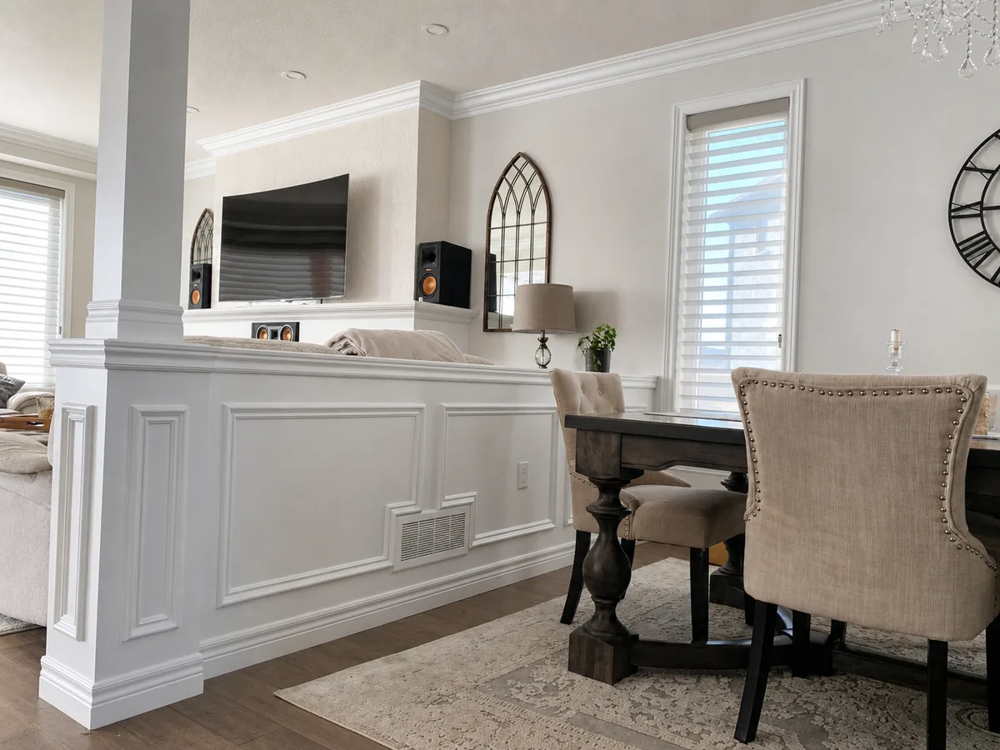
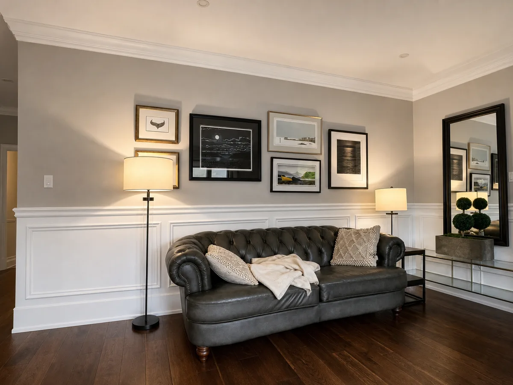

01 / Wall structure
Give blank walls a rhythm.
Panel moulding and wainscoting create a measured sequence across a room—bringing depth to open walls and continuity through long sightlines.
Scope shown Wainscoting · panel moulding · crown transitions

Swipe project details

